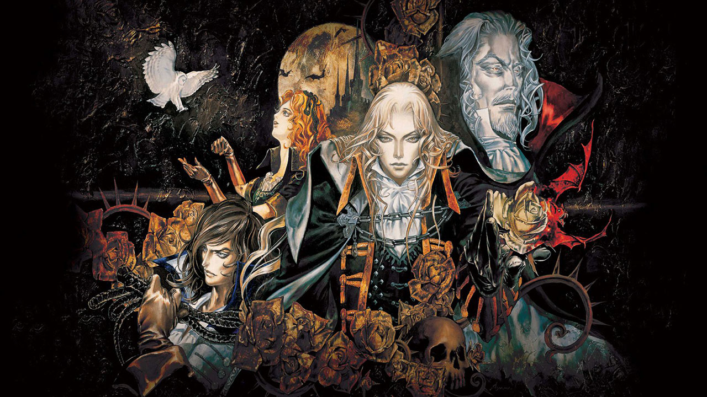
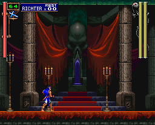
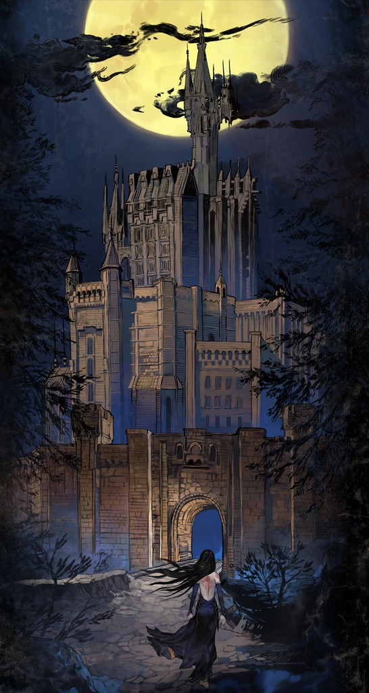
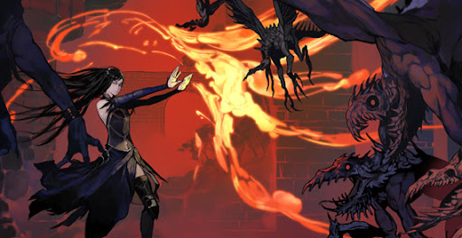

Significance
Castlevania is very similar to metroid in its gameplay so it was no wonder why I got so sucked into this franchise. Even so, “What makes it any different from Metroid?” you may ask. Well, sometimes all that needs to be different is the aesthetic for a series to completely pull you in. Metroid and Castlevania are such an inspiration to countless other games that because of these two franchises, the genre is referred to as, “MetroidVania”. Castlevania is a series about venturing into Dracula’s domain and sending him back to the depths of hell. You travel through dark forests full of beasts, haunted manors teeming with ghouls, and the castle of Count Dracula, otherwise known as Castlevania. The artworks and designs of characters and creatures are just so striking. The music of the series has also always been a highlight. No matter the game, there is always a theme that will get stuck in my head. It is such a shame that the series may never see a new release, however, due to legal stuff, but I always go back to play through my favorites again every now and then.
Order of Ecclesia
 The game that introduced me to the Castlevania series was Order of Ecclesia on the Nintendo DS. Compared to Metroid, you have access to so many more weapons and abilities, and exploration is a bit more action-oriented. The combat was much faster and more difficult, and bosses were more of a threat. I didn’t think I would find another series like Metroid, so I was immediately invested.
Gameplay
The game is separated into levels that you can access on the world map rather than having each and every one of them connect to another. Each level is layed out similarly to metroid where you move in a 2D space and explore many rooms to find powerups and items to progress. Shanoa has the ability to absorb the powers of the demons you defeat on your journey. After absorbing many of the abilities, she has access to a vast array of different weapons, magic, and even transformations that turn her into different creatures. As you complete each level, you unlock more areas to explore until you reach Dracula’s castle.
Plot
Castlevania: Order of Ecclesia takes place after Castlevania: Symphony of the Night, sometime in the 1800s, right after the era of Richter Belmont. Since the Belmont Clan had vanished by that time, several organizations are created in order to research countermeasures against Dracula and his eventual return. Among these organizations, the most promising was the Order of Ecclesia, who created a triad of magical glyphs based on Dracula's power, named "Dominus." Shanoa is a member chosen by the order's leader, Barlowe, as the human vessel for Dominus. As the ritual begins, the Dominus glyphs (Anger, Hatred, Agony) are stolen by Shanoa's colleague Albus, and Shanoa loses her memories and emotions. She goes to retrieve them, unaware of his true intentions.
 In her pursuit, Shanoa arrives in the deserted Wygol Village and finds out that Albus kidnapped its inhabitants, brought them to different hidden locations, and imprisoned them. As Shanoa rescues them throughout the game, she learns that Albus captured them to perform some kind of experiment on them which involved taking samples of their blood. On two occasions, Shanoa tracks down Albus, who willingly gives her two of the Dominus glyphs. When she finds him to be possessed by the power of the third glyph, she is forced to fight him. After killing Albus, his mind and soul are absorbed by Shanoa together with the last Dominus glyph. Albus explains that his true intentions were to find a way to defeat Dracula without Shanoa using Dominus, as he knew that it would kill her if she used it. Her lost memories and emotions were actually taken by Dominus, and not Albus, as Barlowe had told Shanoa. He also reveals that the reason he experimented on the villagers was because they were the last known descendants of the Belmont Clan, and he believed their blood would have the power to help him control Dominus without it consuming him.
Confronting Barlowe after learning the truth, Shanoa learns that his true objective is to bring Dracula back to life, using Shanoa as a sacrifice. After Barlowe is defeated in a fight, he offers his own life to revive Dracula, and Dracula's castle appears. Eventually confronting Dracula, Shanoa successfully defeats him using Dominus, seemingly at the cost of her own life. However, Albus appears and reveals that only a single soul has to be offered. He sacrifices his own soul in Shanoa's place, but not before he restores her memories and emotions and asks her to smile for him. The castle crumbles, and Shanoa escapes.
Music
Bloody Tears - Castlevania: Rondo of Blood An Empty Tome - Castlevania: Order of Ecclesia Wood Carving Partita - Castlevania: Symphony of the Night
| Title | Platform | Have Played |
|---|---|---|
| Castlevania | Nintendo Entertainment System | ✅ |
| Castlevania II: Simon’s Quest | Nintendo Entertainment System | Have but never finished |
| Haunted Castle | Arcade | ❌ |
| Castlevania: The Adventure | Gameboy | Have but never finished |
| Castlevania III: Dracula’s Curse | Nintendo Entertainment System | Have but never finished |
| Castlevania II: Belmont’s Revenge | Gameboy Color | ❌ |
| Super Castlevania IV: | Super Nintendo Entertainment System | Have but never finished |
| Castlevania: Bloodlines | Sega Genesis | ✅ |
| Castlevania: Dracula X | Super Nintendo Entertainment System | Have but never finished |
| Castlevania: Symphony of the Night | PlayStation | ✅ |
| Castlevania Legends | Gameboy | ❌ |
| Castlevania 64 | Nintendo 64 | ❌ |
| Castlevania: Legacy of Darkness | Nintendo 64 | ❌ |
| Castlevania: Circle of the Moon | Gameboy Advance | ❌ |
| Castlevania Chronicles | PlayStation | ❌ |
| Castlevania: Harmony of Dissonance | Gameboy Advance | ❌ |
| Castlevania: Aria of Sorrow | Gameboy Advance | ✅ |
| Castlevania: Lament of Innocence | PlayStation 2 | ❌ |
| Castlevania: Dawn of Sorrow | Nintendo DS | ✅ |
| Castlevania: Curse of Darkness | PlayStation 2 | ❌ |
| Castlevania: Portrait of Ruin | Nintendo DS | ✅ |
| Castlevania: The Dracula X Chronicles | PlayStation Portable | Have but never finished |
| Castlevania: Order of Ecclesia | Nintendo DS | ✅ |
| Castlevania: Lords of Shadow | PlayStation 3 | ❌ |
| Castlevania: Lords of Shadow 2 | PlayStation 3 | ❌ |
| Total Games Played | 13 ⁄ 25 | |